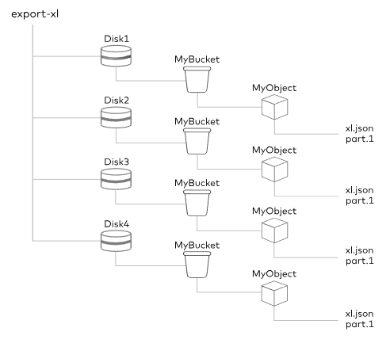

MinIO Object Storage
업데이트:
개요
- MinIO는 고성능 Enterprise Object Store(EOS)로 Amazon Web Services S3 기능을 모두 지원하는 객체 스토리지 솔루션이다.
- 주요 라이센스로는 AGPLv3 라이센스로 Open Source 버전과 비교적 자유적인 이점을 제공하는 상용 라이센스인 MinIO Commercial License가 존재한다.
주요 특징
S3 Compatible Storage
Amazon S3 API와 완벽하게 호환되도록 설계되었으므로 스토리지 및 ID 관리를 위해 동일한 API 구성을 지원한다.
Multi-Site, Active Active Replication for Object Storage
고가용성(HA) 구성을 지원하여 스토리지 용량과 성능을 확장하고, 다중 클러스터 구성을 통해 대규모 데이터 활용과 장애와 같은 불가항력적인 상황에 데이터를 보호할 수 있다.
Bucket and Object Versioning
버전 관리를 통해 사용자는 동일한 버킷에 저장된 모든 객체의 모든 버전을 유지, 검색 및 복원이 가능하다. 설정을 통해 버전 관리 시작 및 중지를 자유롭게 수행하여 의도치 않은 작업으로 부터 데이터를 보호할 수 있다.
Enterprise Grade Object Storage Encryption
디스크에 저장되거나 네트워크를 통해 전송 될 때 데이터를 AES-256-GCM, ChaCha20-Poly1305 및 AES-CBC와 같은 최신 산업 표준 암호화 알고리즘을 사용하여 암호화하며, AWS 외 Hashicorp Vault, Google Secrets Manager 등의 Key Management Services(KMS)와 연동이 가능하다.
MinIO Enterprise Console: A Window Into Your Data Infrastructure
 CLI 뿐 아니라 WEB GUI를 제공하여, 각 기능에 대한 권한을 제어할 수 있으며 모니터링과 이벤트를 실시간으로 확인할 수 있다.
CLI 뿐 아니라 WEB GUI를 제공하여, 각 기능에 대한 권한을 제어할 수 있으며 모니터링과 이벤트를 실시간으로 확인할 수 있다.
Create An In-Memory Object Store for Ultra High Performance Workloads
객체를 캐싱할 수 있는 기능을 자체적으로 제공하여 빠른 검색과 잦은 요청에 대한 부하를 절감할 수 있으며, 노드가 추가되거나 제거될 때 시스템을 정렬하기 위한 셔플링이 최소화된다.
Data Lifecycle Management and Tiering
오브젝트의 생명 주기인 만료를 지정함으로써, 버킷 별 오브젝트 및 태그의 조합을 통해 스토리지 관리를 최적화 할 수 있다.
구조

- 분산 구성의 다중 MinIO를 구성하면, 각 클러스터끼리 RESTful API로
- 독립 구성의 MinIO는 크게 세 부분으로 구성되어 있다.
- S3 Layer는 Application으로부터 S3 API를 통해 요청을 수행받는 영역이다.
- Object Layer는 MinIO에서 제공하는 기능들을 수행하는 영역이다.
- Storage Layer는 File System에 직접적으로 접근하는 영역이다.
- 각 Layer간 통신하기 위해 내부적으로 Object API와 Storage API로 통신된다.
저장 방식
File System
특정 로컬 스토리지의 위치에 저장 경로를 지정하여 MinIO 서비스를 실행하는 방식으로, 해당 시스템에 대한 독점적인 엑세스가 불가능하므로 권장하는 방식이 아니다.
Erasure Code(EC)

객체를 데이터와 패리티 셀로 분할하여 오브젝트의 손상을 복구할 때 사용하는 기법을 제공하는 방법으로, 저장소 공간을 절약하면서 안정적으로 저장 및 복원이 가능한 방식이다.
Quickstart for Containers
Make directory for storage
mkdir -p /data
- MinIO 오브젝트 저장소와 볼륨 마운트할 디렉토리를 생성한다.
Run container using podman
docker run \
-p 9000:9000 \
-p 9001:9001 \
-e "MINIO_ROOT_USER=gracefulsoul" \
-e "MINIO_ROOT_PASSWORD=LeIabo33@!" \
-v /home/minio/data:/data \
--user $(id -u):$(id -g) \
--name minio \
quay.io/minio/minio server /data --console-address ":9001"
- 9000은 Server, 9001은 Console Port를 의미힌다.
- 위에서 만든 Directory Path를 컨테이너 내부 데이터 저장소 Path인 “/data”와 볼륨 마운트를 해준다.
- “MINIO_ROOT_USER”와 “MINIO_ROOT_PASSWORD”는 콘솔 관리자 계정 정보를 넣어준다.
- 현재 유저로 서비스를 수행하기 위하여 “–user” 옵션에 현재 계정의 uid:gid를 넣어준다.
- Docker Hub 내 “quay.io/minio/minio:latest” 이미지를 기반의 minio 컨테이너를 ‘server /data –console-address “:9001”’ 커맨드로 실행한다.
Login
 도커 실행에 사용한 “MINIO_ROOT_USER”와 “MINIO_ROOT_PASSWORD”를 이용하여 로그인을 수행한다.
도커 실행에 사용한 “MINIO_ROOT_USER”와 “MINIO_ROOT_PASSWORD”를 이용하여 로그인을 수행한다.
다음
MinIO Object Storage II - JAVA Sample